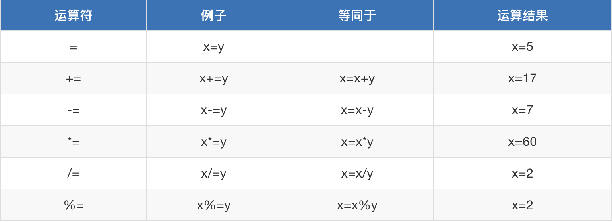

原文连接:https://www.cnblogs.com/fengqiang626/p/11521603.html
目录
1.javascript介绍
1.1Web前端有三层：
- HTML：从语义的角度，描述页面结构
- CSS：从审美的角度，描述样式（美化页面）
- JavaScript：从交互的角度，描述行为（提升用户体验）
1.2其中JavaScript基础又分为三个部分：
- ECMAScript：JavaScript的语法标准。包括变量、表达式、运算符、函数、if语句、for语句等。
- DOM：文档对象模型，操作网页上的元素的API。比如让盒子移动、变色、轮播图等。
- BOM：浏览器对象模型，操作浏览器部分功能的API。比如让浏览器自动滚动。
1.3JavaScript入门易学性
- JavaScript对初学者比较友好。
- JavaScript是有界面效果的（比如C语言只有白底黑字）。
- JavaScript是弱变量类型的语言，变量只需要用var来声明。而Java中变量的声明，要根据变量的类型来定义。
1.4JavaScript的组成
JavaScript基础分为三个部分：
- ECMAScript：JavaScript的语法标准。包括变量、表达式、运算符、函数、if语句、for语句等。
- DOM：操作网页上的元素的API。比如让盒子移动、变色、轮播图等。
- BOM：操作浏览器部分功能的API。比如让浏览器自动滚动。
1.5JavaScript的特点
1.简单易用：可以使用任何文本编辑工具编写，只需要浏览器就可以执行程序
2.解释执行（解释语言）：事先不编译、逐行执行、无需进行严格的变量声明
3.基于对象：内置大量现成对象，编写少量程序可以完成目标
2.javascript语法
学习程序，是有规律可循的，就是程序是有相同的部分，这些部分就是一种规定，不能更改，我们成为：语法。
1.JavaScript对换行、缩进、空格不敏感。
备注：每一条语句末尾要加上分号，虽然分号不是必须加的，但是为了程序今后要压缩，如果不加分号，压缩之后将不能运行。
- 所有的符号，都是英语的。比如 括号、引号、分号。
2.1js代码的引入
在页面中，我们可以在body标签中放入<script src=”text/javascript”></script>标签对儿，<script src=”text/javascript”></script>标签对儿
<script src="text/javascript">
alter("123");
</script>2.1.1变量和赋值
变量
var a = 100; //变量的定义和赋值var是英语“variant”变量的缩写。后面要加一个空格，空格后面的东西就是“变量名”，
定义变量：var就是一个关键字，用来定义变量。所谓关键字，就是有特殊功能的小词语。关键字后面一定要有空格隔开。
变量的赋值：等号表示赋值，将等号右边的值，赋给左边的变量。
变量名：我们可以给变量任意的取名字。
PS：在JavaScript中，永远都是用var来定义变量，这和C、Java等语言不同变量说明
变量名有命名规范：只能由英语字母、数字、下划线、美元符号$构成，且不能以数字开头，并且不能是JavaScript保留字，变量区分大小写也就是说A和a是两个变量。
2.1.2赋值
将等号右边的值，赋给左边的变量；等号右边的变量，值不变。
var a = "3";
var b = 2;
a = b
console.log(a)
console.log(b)注释
// 我是单行注释
/*
多行注释1
多行注释2
*/2.2输入输出信息
2.2.1弹出警告框：alert语句
alert（英文翻译为“警报”）的用途：弹出“警告框”。
<script src="text/javascript">
alert("小马哥");
</script>2.2.2控制台输出console.log("") 和输入框prompt()
console.log("")
表示在控制台中输出。console表示“控制台”，log表示“输出”。
控制台在Chrome浏览器的F12中。控制台是工程师、程序员调试程序的地方。程序员经常使用这条语句输出一些东西，来测试程序是否正确。
prompt()
实际上是一个输入框，就是专门用来弹出能够让用户输入的对话框。prompt()语句中，用户不管输入什么内容，都是字符串。
alert("从前有座山"); //直接使用，不需要变量
var a = prompt("请输入一个数字"); // 需要用变量，才能接收用户输入的值
示例：
alert("从前有座山"); //直接使用，不需要变量
var a = prompt("请输入一个数字"); // 必须用一个变量，来接收用户输入的值console.log和prompt
<script type="text/javascript">
var a = prompt('今天是什么天气？');
console.log(a);
</script>2.3基础数据类型
变量里面能够存储数字、字符串等。和 python一样，js中定义变量的时候不必指定类型，变量会自动的根据存储内容的类型不同，来决定自己的类型。查看类型使用typeof方法。
2.3.1数值类型：number
在JavaScript中，只要是数，就是数值型(number)的。无论整浮、浮点数（即小数）、无论大小、无论正负，都是number类型的。
var a = 100; //定义了一个变量a，并且赋值100
console.log(typeof a); //输出a变量的类型
console.log(typeof(a)); //输出a变量的类型小数的保留
var num = 2.379
var newNum = num.toFixed(2)
console.log(newNum)2.3.2字符串类型：string
定义
var a = "abcde";
var b = '路飞'; //不区分单双引号
console.log(typeof a);
console.log(typeof b);常用方法
| 方法 | 说明 |
|---|---|
| .length #不加括号的是属性 | 返回长度 |
| .trim() #得到一个新值 | 移除空白 |
| .trimLeft() | 移除左边的空白 |
| .trimRight() | 移除右边的空白 |
| .concat(value, ...) #s1='hello';s.concat('xx');得到helloxx | 拼接 |
| .charAt(n) #n类似索引，从0开始，超过最大值返回''空字符串 | 返回第n个字符 |
| .indexOf(substring, start) #这个start是从索引几开始找，没有返回-1 | 子序列位置 |
| .substring(from, to) #不支持负数，所以一般都不用它，了解一下就行了 | 根据索引获取子序列 |
| .slice(start, end) #var s1='helloworld';s1.slice(0,-5)看结果，就用它 | 切片 |
| .toLowerCase() #全部变小写 | 小写 |
| .toUpperCase() #全部变大写 | 大写 |
| .split(delimiter, limit)#分隔,s1.splite(' '),后面还可以加参数s1.split(' '，2),返回切割后的元素个数 | 分割 |
chartAt() 返回指定索引的位置的字符
var str = 'alex';
var charset = str.charAt(1);
console.log(charset);//lconcat 返回字符串值，表示两个或多个字符串的拼接
var str1 = 'alex';
var str2 = 'sb';
console.log(str1.concat(str2,str2));//alexsbsbmatch() 字符串匹配和正则匹配
var a = 'hello,world'
var r = a.match("world")
console.log(r)
var r = a.match("World")
console.log(r)
// 正则
var a = 'abcd,dcba'
var r = a.match(/\w+/)
console.log(r)
// g表示匹配多次
var r = a.match(/\w+/g)
console.log(r)replace(a,b) 将字符串a替换成字符串b
var a = '1234567755';
var newStr = a.replace("4567","****");
console.log(newStr);//123****755indexof()/search() 查找字符的下标，如果找到返回字符串的下标，找不到则返回-1 。
var str = 'alex';
console.log(str.indexOf('e'));//2
console.log(str.indexOf('p'));//-1
console.log(str.search('e'));//2
console.log(str.search('p'));//-1slice(start，end) 切片。左闭右开 分割数组 接收负参数
var str = '小马哥';
console.log(str.slice(1,2));//马substr(start,length) 返回一个字符串：从指定位置开始,取指定字符数。
var str = '我的天呢,a是嘛,你在说什么呢?a哈哈哈';
console.log(str.substr(0,4));//我的天呢
var str = '我的天呢,a是嘛,你在说什么呢?a哈哈哈';
console.log(str.substr(9,6));
var str = '我的天呢,a是嘛,你在说什么呢?a哈哈哈';
console.log(str.substr(-3,3));substring(indexStart,indexEnd) 切子字符串。顾头不顾尾
如果 indexStart 等于 indexEnd，substring 返回一个空字符串。
如果省略 indexEnd，substring 提取字符一直到字符串末尾。
如果任一参数小于 0 或为 NaN，则被当作 0。
如果任一参数大于 stringName.length，则被当作 stringName.length。
如果 indexStart 大于 indexEnd，则 substring 的执行效果就像两个参数调换了一样split('sep',n) 切割,根据n保留切割的数组长度
var str = '我的天呢,a是嘛,你在说什么呢?a哈哈哈';
console.log(str.split('a'));//["我的天呢,", "是嘛,你在说什么呢?", "哈哈哈"] 如果第二个参数没写，表示返回整个数组
console.log(str.split('a',2));//["我的天呢,", "是嘛,你在说什么呢?"] 如果定义了个数，则返回数组的最大长度toLowerCase():转小写
var str = 'EVA';
console.log(str.toLowerCase())；//evatoUpperCase():转大写
var str = 'xiaomage';
console.log(str.toUpperCase());trim() 去除字符串两边的空白
var str = ' 我的天呢 ';
console.log(str.trim());//我的天呢布尔值：boolean
var b1 = false;
console.log(typeof b1)空元素：null
var c1 = null;//空对象. object
console.log(c1)未定义：undefined
var d1;
//表示变量未定义
console.log(typeof d1)2.4内置对象类型
2.4.1数组的创建
var colors = ['red','color','yellow']; //字面量方式创建（推荐）
var colors2 = new Array();//使用构造函数（后面会讲）的方式创建 使用new关键词对构造函数进行创建对象2.4.2数组的赋值
var arr = [];
//通过下标进行一一赋值
arr[0] = 123;
arr[1] = '哈哈哈';
arr[2] = '嘿嘿嘿'2.4.3数组的常用方法
| 方法 | 说明 |
|---|---|
| .length | 数组的大小 |
| .push(ele) | 尾部追加元素 |
| .pop() | 获取尾部的元素 |
| .unshift(ele) | 头部插入元素 |
| .shift() | 头部移除元素 |
| .slice(start, end) | 切片 |
| .reverse() #在原数组上改的 | 反转 |
| .join(seq)#a1.join('+')，seq是连接符 | 将数组元素连接成字符串 |
| .concat(val, ...) #连个数组合并,得到一个新数组，原数组不变 | 连接数组 |
| .sort() | 排序 |
| .forEach() #讲了函数再说 | 将数组的每个元素传递给回调函数 |
| .splice() #参数：1.从哪删(索引), 2.删几个 3.删除位置替换的新元素(可多个元素) | 删除元素，并向数组添加新元素。 |
| .map() #讲了函数再说 | 返回一个数组元素调用函数处理后的值的新数组 |
concat方法：列表的拼接
var north = ['北京','山东','天津'];
var south = ['东莞','深圳','上海'];
var newCity = north.concat(south);
console.log(newCity)join方法：将数组中的元素使用指定的字符串连接起来，它会形成一个新的字符串
var score = [98,78,76,100,0];
var str = score.join('|');
console.log(str);//98|78|76|100|0toString方法：将数组转换成字符串
var score = [98,78,76,100,0];
//toString() 直接转换为字符串 每个元素之间使用逗号隔开
var str = score.toString();
console.log(str);//98,78,76,100,0slice(start,end)：切片(左闭右开)
var arr = ['张三','李四','王文','赵六'];
var newArr = arr.slice(1,3);
console.log(newArr);//["李四", "王文"]pop方法：删除尾元素
var arr = ['张三','李四','王文','赵六'];
var item = arr.pop();
console.log(arr);//["张三", "李四"，"王文"]
console.log(item);//赵六push方法：向数组末尾添加一个元素或多个元素，并返回新的长度
var arr = ['张三','李四','王文','赵六'];
var newLength= arr.push('小马哥');//可以添加多个，以逗号隔开
console.log(newLength);//5
console.log(arr);//["张三", "李四"，"王文"，"赵六"，"小马哥"]reverse()方法：翻转数组
var names = ['alex','xiaoma','tanhuang','angle'];
names.reverse();
console.log(names);sort()方法：排序
var names = ['alex','xiaoma','tanhuang','abngel'];
names.sort();
console.log(names)；// ["alex", "angle", "tanhuang", "xiaoma"]Array.isArray(被检测的值)：判断是否为数组
布尔类型值 = Array.isArray(被检测的值) ;shift()：删除并返回数组的第一个元素
var arr = [1,2,3]
var n = arr.shift()
console.log(arr)
console.log(n)unshift(): 向数组的开头添加一个或更多元素，并返回新的长度
var arr = [1,2,3]
var n = arr.unshift(0)
console.log(arr)
console.log(n)
var arr = [1,2,3]
var n = arr.unshift('alex','wahaha')
console.log(arr)
console.log(n)清空数组的几种方式
var array = [1,2,3,4,5,6];
array.splice(0); //方式1：删除数组中所有项目
array.length = 0; //方式1：length属性可以赋值，在其它语言中length是只读
array = []; //方式3：推荐sort的问题
关于sort()需要注意：
如果调用该方法时没有使用参数，将按字母顺序对数组中的元素进行排序，说得更精确点，是按照字符编码的顺序进行排序。要实现这一点，首先应把数组的元素都转换成字符串（如有必要），以便进行比较。
如果想按照其他标准进行排序，就需要提供比较函数，也就是自己提供一个函数提供排序规则，该函数要比较两个值，然后返回一个用于说明这两个值的相对顺序的数字。比较函数应该具有两个参数 a 和 b，其返回值如下：
若 a 小于 b，在排序后的数组中 a 应该出现在 b 之前，则返回一个小于 0 的值。
若 a 等于 b，则返回 0。
若 a 大于 b，则返回一个大于 0 的值。
示例：
function sortNumber(a,b){
return a - b
}
var arr1 = [11, 100, 22, 55, 33, 44]
arr1.sort(sortNumber)forEach方法，设定每一个元素执行某函数
var arr = ['alex','wusir']
arr.forEach(fn)
function fn(item,index){
console.log(index,item)
}map方法，循环每一个元素完成某操作返回新的值组成新数组
var arr = ['alex','wusir']
var ret = arr.map(fn)
function fn(name,index) {
console.log(index,name)
return name+'sb'
}
console.log(ret)2.5JSON对象
var str1 = '{"name": "chao", "age": 18}';
var obj1 = {"name": "chao", "age": 18};
// JSON字符串转换成对象
var obj = JSON.parse(str1);
// 对象转换成JSON字符串
var str = JSON.stringify(obj1);遍历对象中的内容：
var a = {"name": "Alex", "age": 18};
for (var i in a){
console.log(i, a[i]);
}2.6日期：Date
2.6.1定义
创建日期对象只有构造函数一种方式,使用new关键字
var myDate = new Date(); //创建了一个date对象2.6.2常用方法
//创建日期对象
var myDate=new Date();
//获取一个月中的某一天
console.log(myDate.getDate());
//返回本地时间
console.log(myDate().toLocalString());//2018/5/27 下午10:36:23注意：以上getxxx的方法都是对时间的获取，如果要设置时间，使用setxxx,请参考链接：http://www.runoob.com/jsref/jsref-obj-date.html
2.7RegExp对象
RegExp相关：用的比较多
//RegExp对象
//创建正则对象方式1
// 参数1 正则表达式(不能有空格)
// 参数2 匹配模式：常用g(全局匹配;找到所有匹配，而不是在第一个匹配后停止)和i(忽略大小写)
// 用户名只能是英文字母、数字和_，并且首字母必须是英文字母。长度最短不能少于6位 最长不能超过12位。
// 创建RegExp对象方式（逗号后面不要加空格），假如匹配用户名是只能字母开头后面是字母加数字加下划线的5到11位的
var reg1 = new RegExp("^[a-zA-Z][a-zA-Z0-9_]{5,11}$"); //注意，写规则的时候，里面千万不能有空格，不然匹配不出来你想要的内容，除非你想要的内容本身就想要空格，比如最后这个{5,11},里面不能有空格
// 匹配响应的字符串
var s1 = "bc123";
//RegExp对象的test方法，测试一个字符串是否符合对应的正则规则，返回值是true或false。
reg1.test(s1); // true
// 创建方式2，简写的方式
// /填写正则表达式/匹配模式（逗号后面不要加空格）
var reg2 = /^[a-zA-Z][a-zA-Z0-9_]{5,11}$/;
reg2.test(s1); // true
注意，此处有坑：如果你直接写一个reg2.test()，test里面啥也不传，直接执行，会返回一个true，用其他的正则规则，可能会返回false，是因为，test里面什么也不传，默认传的是一个undefined，并且给你变成字符串undefined，所以能够匹配undefined的规则，就能返回true，不然返回false
// String对象与正则结合的4个方法
var s2 = "hello world";
s2.match(/o/g); // ["o", "o"] 查找字符串中 符合正则 的内容 ，/o/g后面这个g的意思是匹配所有的o,
s2.search(/h/g); // 0 查找字符串中符合正则表达式的内容位置，返回第一个配到的元素的索引位置，加不加g效果相同
s2.split(/o/g); // ["hell", " w", "rld"] 按照正则表达式对字符串进行切割，得到一个新值，原数据不变
s2.replace(/o/g, "s"); // "hells wsrld" 对字符串按照正则进行替换
// 关于匹配模式：g和i的简单示例
var s1 = "name:Alex age:18";
s1.replace(/a/, "哈哈哈"); // "n哈哈哈me:Alex age:18"
s1.replace(/a/g, "哈哈哈"); // "n哈哈哈me:Alex 哈哈哈ge:18" 全局匹配
s1.replace(/a/gi, "哈哈哈"); // "n哈哈哈me:哈哈哈lex 哈哈哈ge:18" 不区分大小写
// 注意事项1：
// 如果regExpObject带有全局标志g，test()函数不是从字符串的开头开始查找，而是从属性regExpObject.lastIndex所指定的索引处开始查找。
// 该属性值默认为0，所以第一次仍然是从字符串的开头查找。
// 当找到一个匹配时，test()函数会将regExpObject.lastIndex的值改为字符串中本次匹配内容的最后一个字符的下一个索引位置。
// 当再次执行test()函数时，将会从该索引位置处开始查找，从而找到下一个匹配。
// 因此，当我们使用test()函数执行了一次匹配之后，如果想要重新使用test()函数从头开始查找，则需要手动将regExpObject.lastIndex的值重置为 0。
// 如果test()函数再也找不到可以匹配的文本时，该函数会自动把regExpObject.lastIndex属性重置为 0。
var reg3 = /foo/g;
// 此时 regex.lastIndex=0
reg3.test('foo'); // 返回true
// 此时 regex.lastIndex=3
reg3.test('xxxfoo'); // 还是返回true
// 所以我们在使用test()方法校验一个字符串是否完全匹配时，一定要加上^和$符号，把匹配规则写的确定一些，尽量不用上面这种的写法/xxx/。
// 注意事项2(说出来你可能不信系列)：
// 当我们不加参数调用RegExpObj.test()方法时, 相当于执行RegExpObj.test(undefined)，然后将这个undefined又转为字符串"undefined",去进行匹配了, 并且/undefined/.test()默认返回true。
var reg4 = /^undefined$/;
reg4.test(); // 返回true
reg4.test(undefined); // 返回true
reg4.test("undefined"); // 返回true2.8数学相关：Math
2.8.1常用方法
Math.abs(x) 返回数的绝对值。
pow(x,y) 返回 x 的 y 次幂。
round(x) 把数四舍五入为最接近的整数。
sqrt(x) 返回数的平方根。
exp(x) 返回 e 的指数。
log(x) 返回数的自然对数（底为e）。
sin(x) 返回数的正弦。
tan(x) 返回角的正切。其他方法
var x = 1.234;
//天花板函数 表示大于等于 x，并且与它最接近的整数是2
var a = Math.ceil(x);
console.log(a);//2Math.ceil() 向上取整，'天花板函数'
var x = 1.234;
// 小于等于 x，并且与它最接近的整数 1
var b = Math.floor(x);
console.log(b);//1Math.floor 向下取整，'地板函数'
console.log(Math.max(2,5));//5
console.log(Math.min(2,5));//2max/min 求两个数的最大值和最小值
var ran = Math.random();
console.log(ran);[0,1)
如果让你取100-200之间的随机数，怎么做？
公式：min - max之间的随机数： min+Math.random()*(max-min)随机数 Math.random() 区间[0,1)
以上是咱们介绍的JS常用对象的方法，如果想参考更多内容，请参考链接：http://www.runoob.com/jsref/jsref-tutorial.html
2.9数据类型之间的转换
parseInt() ：字符串转数字
var a = '5'
var a = parseInt(a);
console.log(typeof(a))
//带有自动净化的功能；只保留字符串最开头的数字，后面的中文自动消失。
console.log(parseInt("2018你真帅！！"));
//自动带有截断小数的功能：取整，不四舍五入。
var a = parseInt(5.8) + parseInt(4.7);
console.log(a);
var a = parseInt(5.8 + 4.7);
console.log(a);parseFloat() : 字符串转小数
var a = parseFloat('5.8')+ parseFloat('4.7');
console.log(a);
var a = parseFloat('5.8' + '4.7');
console.log(a);String()和.toString：转字符串
var n1 = 123;
var str1 = String(n1);
console.log(typeof str1);
var num = 234;
console.log(num.toString())Boolean()：任何数据类型都可以转成布尔值
var b1 = '123'; // true
var b3 = -123; // true
var b4 = Infinity; //表示正无穷大 true
var b2 = 0; // false
var b5 = NaN; //false
var b6; //表示undefined //false
var b7 = null; //false2.10运算符
2.10.1赋值运算符
以var x = 12,y=5来演示示例|

2.10.2比较运算符
var x = 5;

2.10.3算数运算符
var a = 5,b=2

'+': 字符串可相加，数字也可相加，字符串和数字也可以相加。值得注意的是，如果字符串和数字相加会自动把结果转换成字符串。如下：
console.log('吃了'+'么') //'吃了么'
console.log(12+3) //15
console.log('吃了'+3) //'吃了3''-':字符串 - 数值 = 数值
var a = "3";
var b = 2;
console.log(a-b) //1
console.log(b-a) //-1 字符串与数字之间相减的结果是数字2.10.4逻辑运算符
&& 逻辑与 ||逻辑或 !逻辑非
sum = 500
math = 98
console.log(sum>400 && math>90) //true
sum = 400
math = 98
console.log(sum>400 && math>90) //false&&逻辑与，两侧条件都成立的时候才成立
sum = 500
math = 98
console.log(sum>400 || math>90) //true
sum = 400
math = 98
console.log(sum>400 || math>90) //true||逻辑或，两侧条件有一个成立的时候就成立
sum = 500
console.log(!(sum>400)) //false
math = 88
console.log(!(math>90)) //true!逻辑非 true变false，false变true
//1.模拟 如果总分 >400 并且数学成绩 >89分 被清华大学录入
//逻辑与&& 两个条件都成立的时候 才成立
if(sum>400 && math>90){
console.log('清华大学录入成功')
}else{
alert('高考失利')
}
//2.模拟 如果总分>400 或者你英语大于85 被复旦大学录入
//逻辑或 只要有一个条件成立的时候 就成立
if(sum){
alert('被复旦大学录入')
}else{
alert('高考又失利了')
}
//3.逻辑非 true变false，false变true
var sum = 0
if(!sum){
alert('竟然考了个0分');
}
else{
alert('好歹有个成绩');
};2.10.5流程控制
if单分支
var ji = 20;
if(ji >= 20){
console.log('恭喜你，吃鸡成功，大吉大利')
}
alert('alex');//下面的代码还会执行if...else...
var ji = 20;
if(ji>=20){
console.log('恭喜你，吃鸡成功，大吉大利')
}else{
console.log('很遗憾 下次继续努力')if...else if...else
if (true) {
//执行操作
}else if(true){
//满足条件执行
}else if(true){
//满足条件执行
}else{
//满足条件执行
}case语句
var gameScore = 'better';
switch(gameScore){
//case表示一个条件 满足这个条件就会走进来 遇到break跳出。如果某个条件中不写 break，那么直到该程序遇到下一个break停止
case 'good':
console.log('玩的很好')
//break表示退出
break;
case 'better':
console.log('玩的老牛逼了')
break;
case 'best':
console.log('恭喜你 吃鸡成功')
break;
default:
console.log('很遗憾')
}while循环
var i = 1; //初始化循环变量
while(i<=9){ //判断循环条件
console.log(i);
i = i+1; //更新循环条件
}do-while循环
//不管有没有满足while中的条件do里面的代码都会走一次
var i = 3;//初始化循环变量
do{
console.log(i)
i++;//更新循环条件
}while (i<10) //判断循环条件for循环
for(var i = 1;i<=10;i++){
console.log(i)
}
var arr = [1,2,3,4,5]
for (n in arr){
console.log(n)
}三元运算符
var a = 1
var b =2
var c = a>b ? a:b //如果a>b成立返回a，否则返回b
console.log(c)2.11函数
2.11.1函数的定义
function 函数名字(){
}function：是一个关键字。中文是“函数”、“功能”。
函数名字：命名规定和变量的命名规定一样。只能是字母、数字、下划线、美元符号，不能以数字开头。
参数：后面有一对小括号，里面是放参数用的。
大括号里面，是这个函数的语句。2.11.2函数的调用
函数名字();2.11.3函数的参数和返回值：形参和实参
注意：实际参数和形式参数的个数，要相同。
注意：函数只能返回一个值，如果要返回多个值，只能将其放在数组或对象中返回。
console.log(sum(3, 4));
//函数：求和
function sum(a, b) {
return a + b;
}2.11.4伪数组：arguments
arguments代表的是实参。有个讲究的地方是：arguments只在函数中使用。
返回函数实参的个数：arguments.length
fn(2,4);
fn(2,4,6);
fn(2,4,6,8);
function fn(a,b,c) {
console.log(arguments);
console.log(fn.length); //获取形参的个数
console.log(arguments.length); //获取实参的个数
console.log("----------------");
}结果：

之所以说arguments是伪数组，是因为：arguments可以修改元素，但不能改变数组的长短。举例：
fn(2,4);
fn(2,4,6);
fn(2,4,6,8);
function fn(a,b) {
arguments[0] = 99; //将实参的第一个数改为99
arguments.push(8); //此方法不通过，因为无法增加元素
}2.11.5匿名函数
// 匿名函数方式，多和其他函数配合使用，后面我们就会用到了
var sum = function(a, b){ //在es6中，使用var，可能会飘黄，是因为在es6中，建议你使用let来定义变量，不过不影响你使用
return a + b;
}
sum(1, 2);2.11.6自执行函数
// 立即执行函数，页面加载到这里，这个函数就直接执行了，不需要被调用执行
(function(a, b){
return a + b;
})(1, 2); //python中写可以这么写：ret=(lambda x,y:x+y)(10,20) 然后print(ret)2.11.7函数的全局变量和局部变量
局部变量：
在JavaScript函数内部声明的变量（使用 var）是局部变量，所以只能在函数内部访问它（该变量的作用域是函数内部）。只要函数运行完毕，本地变量就会被删除。
全局变量：
在函数外声明的变量是全局变量，网页上的所有脚本和函数都能访问它。
变量生存周期：
JavaScript变量的生命期从它们被声明的时间开始。局部变量会在函数运行以后被删除。全局变量会在页面关闭后被删除。
作用域
首先在函数内部查找变量，找不到则到外层函数查找，逐步找到最外层。
几个例子：
例1:
var city = "BeiJing";
function f() {
var city = "ShangHai";
function inner(){
var city = "ShenZhen";
console.log(city);
}
inner();
}
f(); //输出结果是？ ---> ShenZhen例2
var city = "BeiJing";
function Bar() {
console.log(city);
}
function f() {
var city = "ShangHai";
return Bar;
}
var ret = f();
ret(); // 打印结果是？---> BeiJing例3:闭包
var city = "BeiJing";
function f(){
var city = "ShangHai";
function inner(){
console.log(city);
}
return inner;
}
var ret = f();
ret(); ---> ShangHai